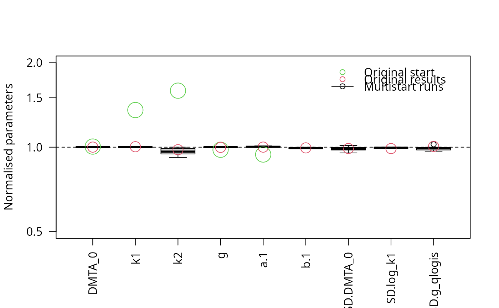
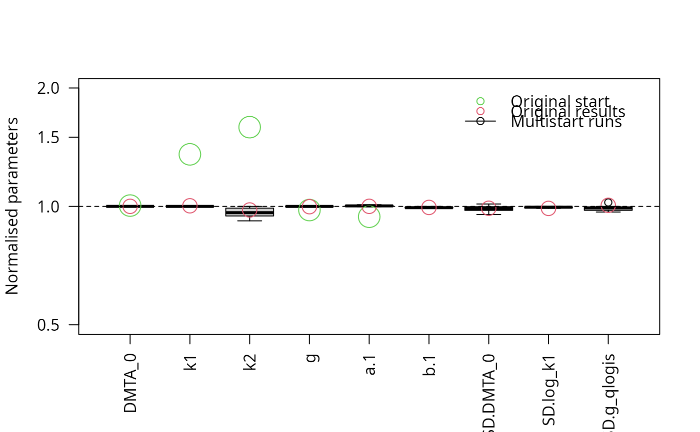

The purpose of this method is to check if a certain algorithm for fitting nonlinear hierarchical models (also known as nonlinear mixed-effects models) will reliably yield results that are sufficiently similar to each other, if started with a certain range of reasonable starting parameters. It is inspired by the article on practical identifiabiliy in the frame of nonlinear mixed-effects models by Duchesne et al (2021).
Usage
multistart(
object,
n = 50,
cores = if (Sys.info()["sysname"] == "Windows") 1 else parallel::detectCores(),
cluster = NULL,
...
)
# S3 method for class 'saem.mmkin'
multistart(object, n = 50, cores = 1, cluster = NULL, ...)
# S3 method for class 'multistart'
print(x, ...)
best(object, ...)
# Default S3 method
best(object, ...)
which.best(object, ...)
# Default S3 method
which.best(object, ...)Arguments
- object
The fit object to work with
- n
How many different combinations of starting parameters should be used?
- cores
How many fits should be run in parallel (only on posix platforms)?
- cluster
A cluster as returned by parallel::makeCluster to be used for parallel execution.
- ...
Passed to the update function.
- x
The multistart object to print
Value
A list of saem.mmkin objects, with class attributes 'multistart.saem.mmkin' and 'multistart'.
The object with the highest likelihood
The index of the object with the highest likelihood
References
Duchesne R, Guillemin A, Gandrillon O, Crauste F. Practical identifiability in the frame of nonlinear mixed effects models: the example of the in vitro erythropoiesis. BMC Bioinformatics. 2021 Oct 4;22(1):478. doi: 10.1186/s12859-021-04373-4.
Examples
# \dontrun{
library(mkin)
dmta_ds <- lapply(1:7, function(i) {
ds_i <- dimethenamid_2018$ds[[i]]$data
ds_i[ds_i$name == "DMTAP", "name"] <- "DMTA"
ds_i$time <- ds_i$time * dimethenamid_2018$f_time_norm[i]
ds_i
})
names(dmta_ds) <- sapply(dimethenamid_2018$ds, function(ds) ds$title)
dmta_ds[["Elliot"]] <- rbind(dmta_ds[["Elliot 1"]], dmta_ds[["Elliot 2"]])
dmta_ds[["Elliot 1"]] <- dmta_ds[["Elliot 2"]] <- NULL
f_mmkin <- mmkin("DFOP", dmta_ds, error_model = "tc", cores = 7, quiet = TRUE)
f_saem_full <- saem(f_mmkin)
f_saem_full_multi <- multistart(f_saem_full, n = 16, cores = 16)
parplot(f_saem_full_multi, lpos = "topleft", las = 2)
 illparms(f_saem_full)
#> [1] "sd(log_k2)"
f_saem_reduced <- update(f_saem_full, no_random_effect = "log_k2")
illparms(f_saem_reduced)
# On Windows, we need to create a PSOCK cluster first and refer to it
# in the call to multistart()
library(parallel)
cl <- makePSOCKcluster(12)
f_saem_reduced_multi <- multistart(f_saem_reduced, n = 16, cluster = cl)
parplot(f_saem_reduced_multi, lpos = "topright", ylim = c(0.5, 2), las = 2)

stopCluster(cl)
# }
illparms(f_saem_full)
#> [1] "sd(log_k2)"
f_saem_reduced <- update(f_saem_full, no_random_effect = "log_k2")
illparms(f_saem_reduced)
# On Windows, we need to create a PSOCK cluster first and refer to it
# in the call to multistart()
library(parallel)
cl <- makePSOCKcluster(12)
f_saem_reduced_multi <- multistart(f_saem_reduced, n = 16, cluster = cl)
parplot(f_saem_reduced_multi, lpos = "topright", ylim = c(0.5, 2), las = 2)

stopCluster(cl)
# }